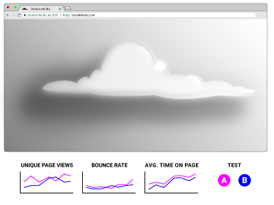

<!DOCTYPE html>

<html lang="en">

<head>
    <meta name="viewport" content="width=device-width, initial-scale=1.0"/>
    <link href='https://fonts.googleapis.com/css?family=Roboto:400,300,700' rel='stylesheet' type='text/css' />
    <title>Andrea&rsquo;s Portfolio: Call Congress Now</title>
    <link href="css/reset.css" rel="stylesheet" />
    <link href="css/stylesheet.css" rel="stylesheet" />
    <link rel="icon" type="image/png" href="images/portfolio-icon.png" />
</head>

</html>

<body class="portfolio">

    <nav class="portfolio-nav">
        <section class="portfolio-nav-left-side">
            <h1 class="portfolio-nav-name">Andrea Leigh Williamson</h1>
            
        </section>
        <div class="portfolio-nav-links">
            <a data-scroll data-options='{ "easing": "easeOutCubic" }' class="portfolio-nav-link" href="#portfolio">PORTFOLIO</a>
            <a data-scroll data-options='{ "easing": "easeOutCubic" }' class="portfolio-nav-link" href="#about">ABOUT/CONTACT</a>
        </div>
    </nav>

    <section class="portfolio-ccn-body">
        <h2 class="portfolio-ccn-title">Call Congress Now: From idea to web application</h2>
        <div class="portfolio-ccn-row">
            <h3 class="portfolio-ccn-intro-header">Overview</h3>
            <p class="portfolio-ccn-intro-blurb">Call Congress Now is a responsive web app I designed and co-developed. Its purpose is to encourage citizens to call their Representatives and Senators for issues they care about. The app provides calling information in a user-friendly way. </p>
        </div>
        <div class="portfolio-ccn-row">
            <h3 class="portfolio-ccn-intro-header">The Design Process</h3>
            <p class="portfolio-ccn-intro-blurb">Call Congress Now was a challenging but rewarding app to design and build. I have outlined my design process below.</p>
        </div>
        <div class="portfolio-ccn-row">
            <div class="portfolio-ccn-column">
                <h3 class="portfolio-ccn-header">Discovery</h3>
                
            </div>
            <div class="portfolio-ccn-column">
                <p class="portfolio-ccn-blurb">In the weeks following election night, I vowed to get more involved in politics. As I talked with like-minded peers and nodded along as I read rant-filled threads, I started wondering what else I could do besides vote in the next election.</p>
                <p class="portfolio-ccn-blurb">I came across long Twitter threads about the impact of picking up the phone and calling Congress. My friend and I were intrigued. We started looking into how to contact Congress were startled by how little information about it existed. Then we realized that we could do something about that.</p>
            </div>
        </div>
        <div class="portfolio-ccn-row">
            <div class="portfolio-ccn-column">
                <h3 class="portfolio-ccn-header">Ideation</h3>
                
            </div>
            <div class="portfolio-ccn-column">
                <p class="portfolio-ccn-blurb">We decided to make a responsive web app that would provide a solution to the following questions:</p>
                <p class="portfolio-ccn-blurb">What would a user-friendly app with calling information look like? And more importantly, how do we motivate our peers to pick up the phone?</p>
            </div>
        </div>
        <div class="portfolio-ccn-row">
            <div class="portfolio-ccn-column">
                <h3 class="portfolio-ccn-header">Design</h3>
                
            </div>
            <div class="portfolio-ccn-column">
            <p class="portfolio-ccn-blurb">We decided to make a responsive web app that would provide a solution to the following: What would a user-friendly app with calling information look like? And more importantly, how do we motivate our peers to pick up the phone?</p>
            </div>
        </div>
        <div class="portfolio-ccn-row">
            <div class="portfolio-ccn-column">
                <h3 class="portfolio-ccn-header">Develop</h3>
                
            </div>
            <div class="portfolio-ccn-column">
            <p class="portfolio-ccn-blurb">We decided to make a responsive web app that would provide a solution to the following: What would a user-friendly app with calling information look like? And more importantly, how do we motivate our peers to pick up the phone?</p>
            </div>
        </div>
        <div class="portfolio-ccn-row">
            <div class="portfolio-ccn-column">
                <h3 class="portfolio-ccn-header">Test</h3>
                
            </div>
            <div class="portfolio-ccn-column">
            <p class="portfolio-ccn-blurb">We decided to make a responsive web app that would provide a solution to the following: What would a user-friendly app with calling information look like? And more importantly, how do we motivate our peers to pick up the phone?</p>
            </div>
        </div>

    </section>

    <footer class="portfolio-footer" id="about">
        <section class="portfolio-footer-about">
            <h3 class="portfolio-footer-about-title">ABOUT ANDREA</h3>
            <p class="portfolio-footer-about-blurb ">I am a UX/UI Designer in Cambridge, MA. Graffiti alley, picture above, is a beloved place of mine in Central Square. It is always changing, just like design!</p>
            <p class="portfolio-footer-about-blurb ">I enjoy solving complex design problems and thrive on teamwork. I have experience with an education startup and have also previously worked in healthcare. My diverse work history gives me a unique perspective on the importance of collaboration and empathy. <a class="portfolio-footer-download-cv" href="https://github.com/andrealeigh/portfolio/raw/master/UX-UI%20Designer%20Resume.pdf">Download my resume</a></p>
        </section>
        <section class="portfolio-footer-contact">
            <div class="portfolio-footer-social-media">
                <a class="portfolio-footer-social-media-icon" href="https://www.linkedin.com/in/andrea-leigh-williamson" target="_blank"></a>
                <a class="portfolio-footer-social-media-icon" href="https://dribbble.com/AndreaLeigh111" target="_blank"></a>
                <a class="portfolio-footer-social-media-icon" href="https://github.com/andrealeigh" target="_blank"></a>
            </div>
            <h5 class="portfolio-footer-email">leigh.andrea@gmail.com</h5>
        </section>
    </footer>

    <script src="js/smooth-scroll.min.js"></script>
    <script>smoothScroll.init();</script>

</body>
